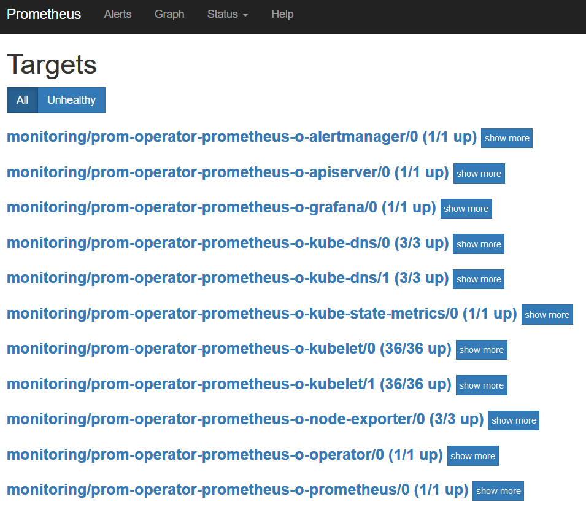
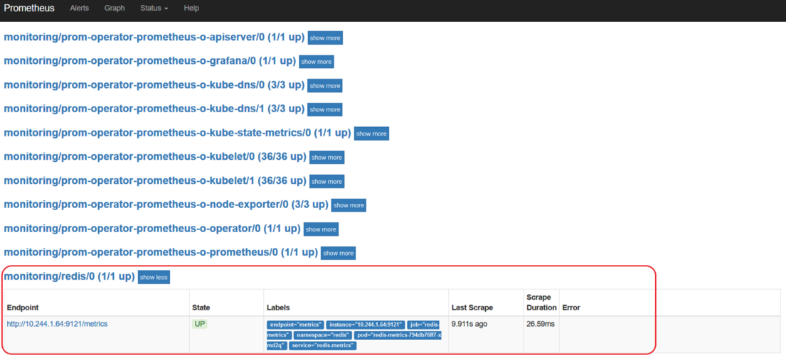
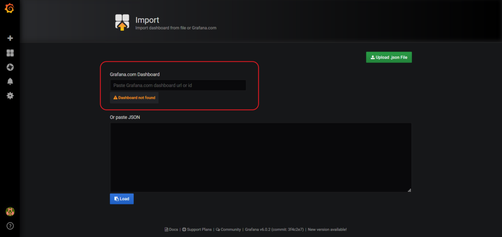
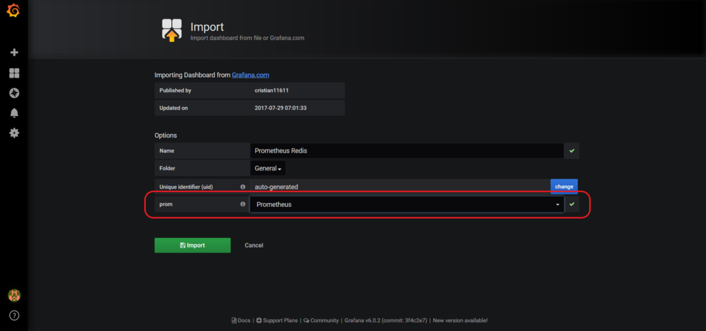
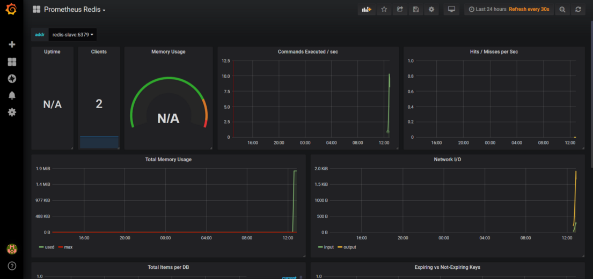
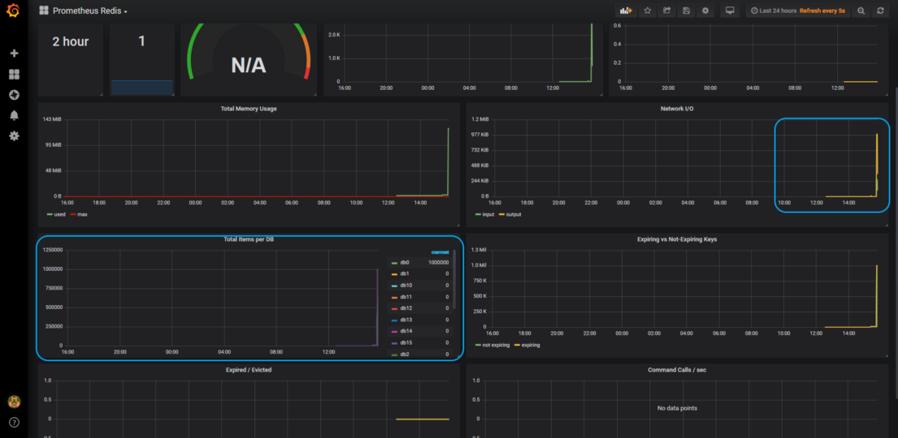

<div class="initial-content">
  <div id="main" role="main">

  <article class="page has-sidebar has-slides" itemscope itemtype="https://schema.org/CreativeWork">
    <meta itemprop="headline" content="Deploying and monitoring a Redis cluster to Oracle Container Engine (OKE)">
    
    <meta itemprop="datePublished" content="2021-12-15T13:34:00+00:00">
    


    <header>
      <h1 id="page-title" class="page__title" itemprop="headline">Deploying and monitoring a Redis cluster to Oracle Container Engine (OKE)
</h1>
      


    </header>

    <section class="page__content" itemprop="text">
      
        <!-- <aside class="sidebar__right sticky">
          <nav class="slides-nav"><ul><li class="active" data-target-slide="0"><a href="javascript:cool.slides.goToSlide(0)">Intro</a></li>
<li data-target-slide="1"><a href="javascript:cool.slides.goToSlide(1)">Before you begin</a></li>
<li data-target-slide="2"><a href="javascript:cool.slides.goToSlide(2)">Deploy Prometheus Operator</a></li>
<li data-target-slide="3"><a href="javascript:cool.slides.goToSlide(3)">Deploy Redis Cluster</a></li>
<li data-target-slide="4"><a href="javascript:cool.slides.goToSlide(4)">Import Redis Dashboard for Grafana</a></li>
<li data-target-slide="5"><a href="javascript:cool.slides.goToSlide(5)">Installing the Prometheus Operator and Redis cluster using the Terraform helm provider</a></li>
<li data-target-slide="6"><a href="javascript:cool.slides.goToSlide(6)">What's Next</a></li></ul></nav>
        </aside> -->
      

        <div class="slides" id="slideshow">

  <div class="slide active" id="slide-0">

    <h2 class="slide__title"><span class="slide__num">1</span> Introduction</h2>

    <p>In the <a href="https://medium.com/@lmukadam/extending-terraform-oke-with-a-helm-chart-a51ae0df29d4">previous post</a>, you learned how to add a simple extension to the <a href="https://github.com/oracle-terraform-modules/terraform-oci-oke">terraform-oci-oke project</a> so that it uses the <a href="https://github.com/helm/charts/tree/master/stable/redis">Redis helm chart</a> to deploy a Redis cluster on Kubernetes.</p>

    <p>In the current tutorial, you’ll build on this background by exploring how set up Promtheus to monitor your Redis cluster.</p>

    <p>Key tasks include how to:</p>

    <ul>
      <li>Deploy a Redis cluster</li>
      <li>Monitor the Redis cluster with Prometheus</li>
      <li>Populate the Redis cluster with existing data using Redis Mass Insertion</li>
      <li>Visualize the mass-insertion process with Grafana</li>
      <li>Use the Terraform helm provider as an alternate deployment and monitoring procedure</li>
    </ul>

    <p>For additional information, see:</p>

    <ul>
      <li><a href="https://docs.oracle.com/iaas/Content/GSG/Tasks/signingup.htm">Signing Up for Oracle Cloud Infrastructure</a></li>
    </ul>

    <div class="slide__nav"><a href="javascript:cool.slides.goToSlide(1)" class="slides__btn--begin">Begin &raquo;</a></div>

  </div>

  <div class="slide" id="slide-1">

    <h2 class="slide__title"><span class="slide__num">2</span> Before you begin</h2>

    <h3 id="requirements">Requirements</h3>

    <ul>
      <li>An Oracle Cloud Infrastructure Free Tier account. <a href="https://signup.cloud.oracle.com/?language=en&amp;sourceType=:ow:de:te::::RC_WWMK211116P00260:DotBuildGetStarted&amp;intcmp=:ow:de:te::::RC_WWMK211116P00260:DotBuildGetStarted">Start for Free</a>.</li>
      <li>A MacOS, Linux, or Windows computer with <code class="language-plaintext highlighter-rouge">ssh</code> support installed.</li>
      <li>Access to Grafana.</li>
      <li>Access to helm.</li>
    </ul>

    <div class="slide__nav"><a href="javascript:cool.slides.goToSlide(0)">&laquo; Back</a> <a href="javascript:cool.slides.goToSlide(2)">Continue &raquo;</a></div>

  </div>

  <div class="slide" id="slide-2">

    <h2 class="slide__title"><span class="slide__num">3</span> Deploy Prometheus Operator</h2>

    <ol>
      <li>
        <p>To get things started, open a terminal and create a namespace for Prometheus:</p>

        <div class="language-console highlighter-rouge"><div class="highlight"><pre class="highlight"><code><span class="go">kubectl create namespace monitoring
</span></code></pre></div>        </div>
      </li>
      <li>
        <p>If you are using the <code class="language-plaintext highlighter-rouge">terraform-oci-oke</code> module and have provisioned the bastion host, helm is already installed and pre-configured for you! Just login to the bastion host and deploy the Prometheus operator:</p>

        <div class="language-console highlighter-rouge"><div class="highlight"><pre class="highlight"><code><span class="go">helm install --namespace monitoring \
stable/prometheus-operator \
--name prom-operator \
--set kubeDns.enabled=true \
--set prometheus.prometheusSpec.serviceMonitorSelectorNilUsesHelmValues=false \
--set coreDns.enabled=false \
--set kubeControllerManager.enabled=false \
--set kubeEtcd.enabled=false \
--set kubeScheduler.enabled=false
</span></code></pre></div>        </div>

        <p>By setting <code class="language-plaintext highlighter-rouge">serviceMonitorSelectorNilUsesHelmValues</code> to false you ensure that all ServiceMonitors will be selected.</p>
      </li>
      <li>
        <p>Get a list of pods and identify the ones associated with Prometheus:</p>

        <div class="language-console highlighter-rouge"><div class="highlight"><pre class="highlight"><code><span class="go">kubectl -n monitoring get pods | grep prometheus
</span></code></pre></div>        </div>

        <p>The system will echo something similar to the following:</p>

        <div class="language-console highlighter-rouge"><div class="highlight"><pre class="highlight"><code><span class="go">alertmanager-prom-operator-prometheus-o-alertmanager-0   2/2     
Running   0          18s                                                        
prom-operator-prometheus-node-exporter-9xhzr             1/1     
Running   0          24s                                                        
prom-operator-prometheus-node-exporter-qtbvv             1/1     
Running   0          24s                                                        
prom-operator-prometheus-node-exporter-wjbfp             1/1     
Running   0          24s                                                        
prom-operator-prometheus-o-operator-79ff98787f-4t4k7     1/1     
Running   0          23s                                                        
prometheus-prom-operator-prometheus-o-prometheus-0       3/3     
Running   1          11s
</span></code></pre></div>        </div>
      </li>
      <li>
        <p>In another terminal, set your local <code class="language-plaintext highlighter-rouge">KUBECONFIG</code> environment variable and run <code class="language-plaintext highlighter-rouge">kubectl port-forward</code> locally to access the Prometheus Expression Browser:</p>

        <div class="language-console highlighter-rouge"><div class="highlight"><pre class="highlight"><code><span class="go">export KUBECONFIG=generated/kubeconfig

kubectl -n monitoring port-forward prometheus-prom-operator-
prometheus-o-prometheus-0 9090:9090
</span></code></pre></div>        </div>
      </li>
      <li>
        <p>To verify the targets, open your browser and access the Prometheus Expression Browser at <code class="language-plaintext highlighter-rouge">http://localhost:9090/targets</code></p>

        <picture class="">
             <source srcset="assets/redis-prometheus-targets.png 1x" />
             
         </picture>
      </li>
    </ol>

    <h3 id="configure-grafana">Configure Grafana</h3>

    <p>Next, you’ll verify that Grafana has been configured properly and already has Prometheus as a datasource.  With this set, you’ll be able monitor your Redis installation once it’s been deployed.</p>

    <ol>
      <li>
        <p>In a console, get a list of pods and identify the ones associated with Grafana:</p>

        <div class="language-console highlighter-rouge"><div class="highlight"><pre class="highlight"><code><span class="go">kubectl -n monitoring get pods | grep grafana
</span></code></pre></div>        </div>

        <p>This will echo something similiar to the following:</p>

        <div class="language-console highlighter-rouge"><div class="highlight"><pre class="highlight"><code><span class="go">grafanaprom-operator-grafana-77cdf86d94-m8pv5 2/2     Running   0          57s
</span></code></pre></div>        </div>
      </li>
      <li>
        <p>Run <code class="language-plaintext highlighter-rouge">kubectl port-forward</code> locally to access Grafana:</p>

        <div class="language-console highlighter-rouge"><div class="highlight"><pre class="highlight"><code><span class="go">kubectl -n monitoring port-forward prom-operator-grafana-77cdf86d94-m8pv5 3000:3000
</span></code></pre></div>        </div>
      </li>
      <li>
        <p>Access Grafana by connecting to port 30 on your browser (<code class="language-plaintext highlighter-rouge">http://localhost:3000</code>).</p>

        <p>Login with admin/prom-operator. Use the default username and password if you have not yet changed them. Once you’ve logged in, you should be able to see the default Kubernetes dashboards.</p>
      </li>
    </ol>

    <div class="slide__nav"><a href="javascript:cool.slides.goToSlide(1)">&laquo; Back</a> <a href="javascript:cool.slides.goToSlide(3)">Continue &raquo;</a></div>

  </div>

  <div class="slide" id="slide-3">

    <h2 class="slide__title"><span class="slide__num">4</span> Deploy Redis Cluster</h2>

    <ol>
      <li>
        <p>Create a namespace for Redis:</p>

        <div class="language-console highlighter-rouge"><div class="highlight"><pre class="highlight"><code><span class="go">kubectl create namespace redis
</span></code></pre></div>        </div>
      </li>
      <li>
        <p>Use helm to deploy the Redis cluster:</p>

        <div class="language-console highlighter-rouge"><div class="highlight"><pre class="highlight"><code><span class="go">helm install --namespace redis \
stable/redis \
--name redis \
--set cluster.enabled=true \
--set cluster.slaveCount=3 \
--set master.persistence.size=50Gi \
--set slave.persistence.size=50Gi \
--set metrics.enabled=true \
--set metrics.serviceMonitor.enabled=true \
--set metrics.serviceMonitor.namespace=monitoring
</span></code></pre></div>        </div>
      </li>
      <li>
        <p>Access the Prometheus Expression Browser again (<code class="language-plaintext highlighter-rouge">http://localhost:9090/targets</code>) and verify that Redis is now listed as one of the targets:</p>

        <picture class="">
             <source srcset="assets/redis-prometheus-targets-updated.png 1x" />
             
         </picture>
      </li>
    </ol>

    <div class="slide__nav"><a href="javascript:cool.slides.goToSlide(2)">&laquo; Back</a> <a href="javascript:cool.slides.goToSlide(4)">Continue &raquo;</a></div>

  </div>

  <div class="slide" id="slide-4">

    <h2 class="slide__title"><span class="slide__num">5</span> Import Redis Dashboard for Grafana</h2>

    <ol>
      <li>Login to Grafana (<code class="language-plaintext highlighter-rouge">http://localhost:3000</code>).</li>
      <li>Select <strong>+</strong> on the left-hand menu to import a dashboard.</li>
      <li>
        <p>Enter the dashboard id <code class="language-plaintext highlighter-rouge">2751</code> in the Grafana.com dashboard field:</p>

        <picture class="">
             <source srcset="assets/redis-import-grafana.png 1x" />
             
         </picture>
      </li>
      <li>
        <p>After the dashboard is loaded, select the Prometheus datasource:</p>

        <picture class="">
             <source srcset="assets/redis-grafana-imported.png 1x" />
             
         </picture>
      </li>
      <li>
        <p>Select <strong>Import</strong>. You should now have a functioning Redis dashboard in Grafana!</p>

        <picture class="">
             <source srcset="assets/redis-dashboard.png 1x" />
             
         </picture>
      </li>
    </ol>

    <h3 id="mass-insert-data-into-redis">Mass-insert data into Redis</h3>

    <p>In this step, you’ll learn a neat little time saver that will allow you to import large amounts of data into Redis using a csv file.</p>

    <h4 id="format-your-initial-filescsv">Format your initial <code class="language-plaintext highlighter-rouge">files.csv</code></h4>

    <ol>
      <li>
        <p>First, make sure that your <code class="language-plaintext highlighter-rouge">file.csv</code> data file is set up with the same format as the one shown below:</p>

        <div class="language-console highlighter-rouge"><div class="highlight"><pre class="highlight"><code><span class="go">id, first name, age, gender, nickname, salary
1, John Smith, 40, Male, John, 10000
2, Marco Polo, 43, Male, Marco, 10000
…
1999999, Tom Cruse, 50, Male, Tom, 10001
</span></code></pre></div>        </div>
      </li>
      <li>
        <p>To import your csv file into Redis, run the following command in your console:</p>

        <div class="language-console highlighter-rouge"><div class="highlight"><pre class="highlight"><code><span class="gp">awk -F, 'NR &gt;</span><span class="w"> </span>1<span class="o">{</span> print <span class="s2">"SET"</span>, <span class="s2">"</span><span class="se">\"</span><span class="s2">employee_"</span><span class="nv">$1</span><span class="s2">"</span><span class="se">\"</span><span class="s2">"</span>, <span class="s2">"</span><span class="se">\"</span><span class="s2">"</span><span class="nv">$0</span><span class="s2">"</span><span class="se">\"</span><span class="s2">"</span> <span class="o">}</span><span class="s1">' file.csv | redis-cli --pipe
</span></code></pre></div>        </div>
      </li>
    </ol>

    <h4 id="generate-dataset-with-mimesis">Generate dataset with mimesis</h4>

    <p>In this part, you’ll be using the mimesis package to create a dataset based on the information you provided in <code class="language-plaintext highlighter-rouge">file.csv</code>.</p>

    <ol>
      <li>
        <p>In a console, install mimesis:</p>

        <div class="language-console highlighter-rouge"><div class="highlight"><pre class="highlight"><code><span class="go">pip install mimesis
</span></code></pre></div>        </div>
      </li>
      <li>
        <p>Your initial dataset will need a little tweaking to be ready for use in Redis. So, in this part, you’ll adapt the mimesis schema a little bit to create a new csv file using Python. Create a <code class="language-plaintext highlighter-rouge">names.py</code> file with the following content:</p>

        <div class="language-python highlighter-rouge"><div class="highlight"><pre class="highlight"><code><span class="kn">import</span> <span class="nn">csv</span>

<span class="kn">from</span> <span class="nn">mimesis</span> <span class="kn">import</span> <span class="n">Person</span>

<span class="kn">from</span> <span class="nn">mimesis.enums</span> <span class="kn">import</span> <span class="n">Gender</span>

<span class="n">en</span> <span class="o">=</span> <span class="n">Person</span><span class="p">(</span><span class="s">'en'</span><span class="p">)</span>

<span class="k">with</span> <span class="nb">open</span><span class="p">(</span><span class="s">'file.csv'</span><span class="p">,</span><span class="n">mode</span><span class="o">=</span><span class="s">'w'</span><span class="p">)</span> <span class="k">as</span> <span class="n">csv_file</span><span class="p">:</span>

<span class="n">field_names</span> <span class="o">=</span> <span class="p">[</span><span class="s">'id'</span><span class="p">,</span> <span class="s">'full name'</span><span class="p">,</span> <span class="s">'age'</span><span class="p">,</span> <span class="s">'gender'</span><span class="p">,</span> <span class="s">'username'</span><span class="p">,</span> <span class="s">'weight'</span><span class="p">]</span>

<span class="n">writer</span> <span class="o">=</span> <span class="n">csv</span><span class="p">.</span><span class="n">DictWriter</span><span class="p">(</span><span class="n">csv_file</span><span class="p">,</span> <span class="n">fieldnames</span><span class="o">=</span><span class="n">field_names</span><span class="p">)</span>

<span class="n">writer</span><span class="p">.</span><span class="n">writeheader</span><span class="p">()</span>

<span class="k">for</span> <span class="n">n</span> <span class="ow">in</span> <span class="nb">range</span><span class="p">(</span><span class="mi">100000</span><span class="p">):</span>

<span class="n">writer</span><span class="p">.</span><span class="n">writerow</span><span class="p">({</span><span class="s">'id'</span><span class="p">:</span> <span class="nb">str</span><span class="p">(</span><span class="n">n</span><span class="p">),</span> <span class="s">'first name'</span><span class="p">:</span> <span class="n">en</span><span class="p">.</span><span class="n">full_name</span><span class="p">(),</span> <span class="s">'age'</span><span class="p">:</span> 
<span class="nb">str</span><span class="p">(</span><span class="n">en</span><span class="p">.</span><span class="n">age</span><span class="p">()),</span> <span class="s">'gender'</span><span class="p">:</span> <span class="n">en</span><span class="p">.</span><span class="n">gender</span><span class="p">(),</span> <span class="s">'username'</span><span class="p">:</span><span class="n">en</span><span class="p">.</span><span class="n">username</span><span class="p">(),</span>
<span class="s">'weight'</span><span class="p">:</span><span class="nb">str</span><span class="p">(</span><span class="n">en</span><span class="p">.</span><span class="n">weight</span><span class="p">())})</span>
</code></pre></div>        </div>
      </li>
      <li>
        <p>In a console, run the Python script to generate the data:</p>

        <div class="language-console highlighter-rouge"><div class="highlight"><pre class="highlight"><code><span class="go">python names.py
</span></code></pre></div>        </div>

        <p>This will create a <code class="language-plaintext highlighter-rouge">file.csv</code> in the current directory. You can <a href="https://kubernetes.io/docs/tasks/configure-pod-container/configure-persistent-volume-storage/">configure a PersistentVolume</a> to store and load the data, but for the purpose of this tutorial, you’ll do a quick hack by installing Redis on the bastion.</p>
      </li>
    </ol>

    <h4 id="install-and-configure-redis-on-the-bastion">Install and configure Redis on the bastion</h4>

    <ol>
      <li>
        <p>In your console, run:</p>

        <div class="language-console highlighter-rouge"><div class="highlight"><pre class="highlight"><code><span class="go">sudo yum install redis -y
</span></code></pre></div>        </div>

        <p>This will allow you to use the redis-cli from the bastion where you’ve generated/uploaded your <code class="language-plaintext highlighter-rouge">file.csv</code>.</p>
      </li>
      <li>
        <p>On the bastion, get a list of Redis pods:</p>

        <div class="language-console highlighter-rouge"><div class="highlight"><pre class="highlight"><code><span class="go">kubectl -n redis get pods
</span></code></pre></div>        </div>

        <p>The system will echo something similar to the following:</p>

        <div class="language-console highlighter-rouge"><div class="highlight"><pre class="highlight"><code><span class="go">                                 NAME   READY    STATUS    RESTARTS   AGE                                                                                
redis-master-0                   1/1     Running   0          156m                                                                               
redis-metrics-794db76ff7-xmd2q   1/1     Running   0          156m                                                                               
redis-slave-7fd8b55f7-25w8d      1/1     Running   1          156m                                                                               
redis-slave-7fd8b55f7-hvhmc      1/1     Running   1          156m                                                                               
redis-slave-7fd8b55f7-mjq8q      1/1     Running   1          156m
</span></code></pre></div>        </div>
      </li>
      <li>
        <p>Afterwards, use <code class="language-plaintext highlighter-rouge">port-forward</code> so you can access the Redis master using the redis-cli:</p>

        <div class="language-console highlighter-rouge"><div class="highlight"><pre class="highlight"><code><span class="go">k -n redis port-forward redis-master-0 6379:6379
</span></code></pre></div>        </div>

        <p>Redis wil echo something similar to the following:</p>

        <div class="language-console highlighter-rouge"><div class="highlight"><pre class="highlight"><code><span class="gp">Forwarding from 127.0.0.1:6379 -&gt;</span><span class="w"> </span>6379
</code></pre></div>        </div>
      </li>
      <li>
        <p>Open a new terminal, login to the bastion and obtain the Redis password:</p>

        <div class="language-console highlighter-rouge"><div class="highlight"><pre class="highlight"><code><span class="gp">export REDIS_PASSWORD=$</span><span class="o">(</span>kubectl get secret <span class="nt">--namespace</span> redis redis <span class="nt">-o</span> <span class="nv">jsonpath</span><span class="o">=</span><span class="s2">"{.data.redis-password}"</span> | <span class="nb">base64</span> <span class="nt">--decode</span><span class="o">)</span>
</code></pre></div>        </div>

        <p>Just as a check, do a quick test to see if you can connect to Redis. In a cosole, run:</p>

        <div class="language-console highlighter-rouge"><div class="highlight"><pre class="highlight"><code><span class="gp">redis-cli -a $</span>REDIS_PASSWORD127.0.0.1:6379&gt; 
</code></pre></div>        </div>

        <p>Redis will echo with something similar to the following:</p>

        <div class="language-console highlighter-rouge"><div class="highlight"><pre class="highlight"><code><span class="go">ping                                                                                                                                                        
PONG                                                                                                                                                                        
</span><span class="gp">127.0.0.1:6379&gt;</span><span class="w">
</span></code></pre></div>        </div>
      </li>
    </ol>

    <h4 id="prep-grafana-for-csv-import">Prep Grafana for csv import</h4>

    <p>Before you import your csv, you’ll first need to access Grafana (<code class="language-plaintext highlighter-rouge">http://localhost:3000</code>).</p>

    <ol>
      <li>
        <p>In a new terminal, run <code class="language-plaintext highlighter-rouge">kubectl port-forward</code> locally. Also, make sure that you navigate to the Redis Dashboard and set the refresh to every 5 seconds:</p>

        <div class="language-console highlighter-rouge"><div class="highlight"><pre class="highlight"><code><span class="go">kubectl -n monitoring port-forward prom-operator-grafana-77cdf86d94-m8pv5 3000:3000
</span></code></pre></div>        </div>
      </li>
      <li>
        <p>Import your csv:</p>

        <div class="language-console highlighter-rouge"><div class="highlight"><pre class="highlight"><code><span class="gp">awk -F, 'NR &gt;</span><span class="w"> </span>1<span class="o">{</span> print <span class="s2">"SET"</span>, <span class="s2">"</span><span class="se">\"</span><span class="s2">employee_"</span><span class="nv">$1</span><span class="s2">"</span><span class="se">\"</span><span class="s2">"</span>, <span class="s2">"</span><span class="se">\"</span><span class="s2">"</span><span class="nv">$0</span><span class="s2">"</span><span class="se">\"</span><span class="s2">"</span> <span class="o">}</span><span class="s1">' file.csv | redis-cli -a $REDIS_PASSWORD --pipe
</span></code></pre></div>        </div>

        <p>The system will echo with something similar to:</p>

        <div class="language-console highlighter-rouge"><div class="highlight"><pre class="highlight"><code><span class="go">All data transferred. Waiting for the last reply...                                                                                      
Last reply received from server.
        
errors: 0, replies: 1000000
</span></code></pre></div>        </div>

        <p>The Redis cluster is now deployed and actively being monitored by Prometheus!</p>

        <p>At this point, you may want to watch the Redis dashboard in Grafana. You can see the immediate jump in Network IO, the number of items in the DB as well as the amount of memory used.</p>

        <picture class="">
             <source srcset="assets/redis-dashboard-after-insertion.png 1x" />
             
         </picture>
      </li>
    </ol>

    <div class="slide__nav"><a href="javascript:cool.slides.goToSlide(3)">&laquo; Back</a> <a href="javascript:cool.slides.goToSlide(5)">Continue &raquo;</a></div>

  </div>

  <div class="slide" id="slide-5">

    <h2 class="slide__title"><span class="slide__num">6</span> Installing the Prometheus Operator and Redis cluster using the Terraform helm provider</h2>

    <p>Earlier in this tutorial, you learned how to manually install the Prometheus Operator and Redis Cluster through the cli, but this isn’t the only option available to you. You can also achieve the same results using the Terraform helm provider, but there are a few important things to keep in mind while doing so.</p>

    <p>As you’re enabling monitoring on Redis, you’ll now need to ensure that the relevant custom resource definitions (CRDs) are created. Previously, the manual steps you performed made certain that the CRDs were created and in the proper order.<br />
However, when you use Terraform to do the provisioning, you’ll need to explicitly set the order as follows:</p>

    <div class="language-console highlighter-rouge"><div class="highlight"><pre class="highlight"><code><span class="go">resource "helm_release" "prometheus-operator" {
</span><span class="c">   ...
   ...
   ...
</span><span class="go">}
  
resource "helm_release" "redis" {  

   depends_on = ["helm_release.prometheus-operator"]
</span><span class="c">   ...
   ...
   ...
</span><span class="go">}
</span></code></pre></div>    </div>

    <p>Congratulations! After performing these steps, you’ve ensured that the prometheus-operator release is created first, along with all the necessary CRDs that the Redis release will need (like Alertmanager, Prometheus, PrometheusRule, and ServiceMonitor) for Prometheus to be able to monitor the Redis cluster.</p>

    <div class="slide__nav"><a href="javascript:cool.slides.goToSlide(4)">&laquo; Back</a> <a href="javascript:cool.slides.goToSlide(6)">Continue &raquo;</a></div>

  </div>

  <div class="slide" id="slide-6">

    <h2 class="slide__title"><span class="slide__num">7</span> What's Next</h2>

    <p>You have successfully deployed a Redis cluser and enabled monitoring with Prometheus.</p>

    <p>To explore more information about development with Oracle products:</p>

    <ul>
      <li><a href="https://developer.oracle.com/">Oracle Developers Portal</a></li>
      <li><a href="https://www.oracle.com/cloud/">Oracle Cloud Infrastructure</a></li>
    </ul>

    <div class="slide__nav"><a href="javascript:cool.slides.goToSlide(5)">&laquo; Back</a></div>

  </div>

</div>


          <div class="sidebar sticky">
    <!-- <p><strong>Tags:</strong> <span class="tags">

            
            <a class="animated-link tag" href="/topics/back-end">back-end</a>
            <a class="animated-link tag" href="/topics/oci">oci</a>
            </span>
    </p> -->
  


<div itemscope itemtype="https://schema.org/Person">

  

  <div class="author__content">
    
      <a href="https:/lmukadam.medium.com"><h3 class="author__name" itemprop="name">Ali Mukadam</h3></a>
    
    
      <div class="author__bio" itemprop="description">
        <p>Technical Director, Asia Pacific Center of Excellence.</p>

<p>For the past 16 years, Ali has held technical presales, architect and industry consulting roles in BEA Systems and Oracle across Asia Pacific, focusing on middleware and application development. Although he pretends to be Thor, his real areas of expertise are Application Development, Integration, SOA (Service Oriented Architecture) and BPM (Business Process Management). An early and worthy Docker and Kubernetes adopter, Ali also leads a few open source projects (namely <a href="https://github.com/oracle-terraform-modules/terraform-oci-oke">terraform-oci-oke</a>) aimed at facilitating the adoption of Kubernetes and other cloud native technologies on Oracle Cloud Infrastructure.</p>

      </div>
    
  </div>

  <div class="author__urls-wrapper">
    <ul class="author__urls social-icons">
      

      

      

      

      

      

      

      
        <li>
          <a href="https://www.linkedin.com/in/alimukadam" itemprop="sameAs" rel="nofollow noopener noreferrer">
            <i class="fab fa-fw fa-linkedin" aria-hidden="true"></i><span class="label">LinkedIn</span>
          </a>
        </li>
      

      

      

      

      

      

      

      

      

      

      

      

      

      

      

      

      

      

      

      
    </ul>
  </div>
</div>

  
  
  

  </div>


      </section>

      <footer class="page__meta">
        
        


        

  <p class="page__date"><strong><i class="fas fa-fw fa-calendar-alt" aria-hidden="true"></i> Updated:</strong> <time datetime="2021-12-15T13:34:00+00:00">December 15, 2021</time></p>


      </footer>
    </div>

  </article>
</div>

</div>

